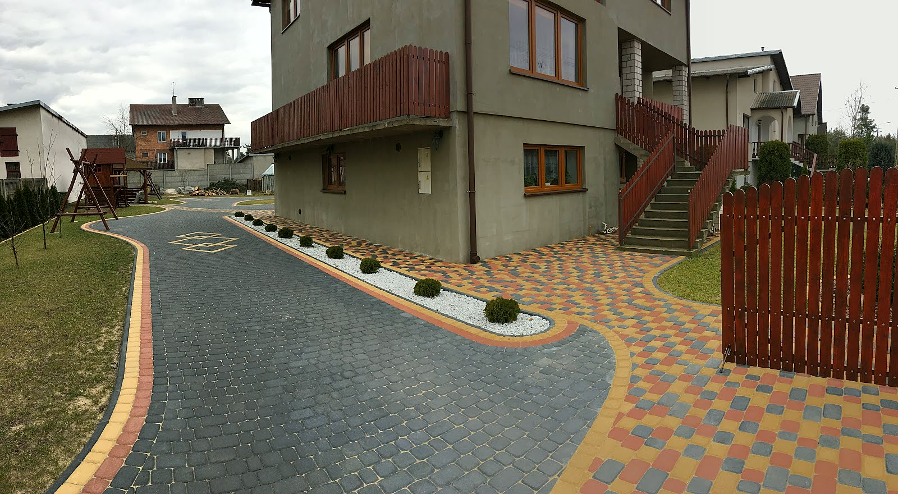
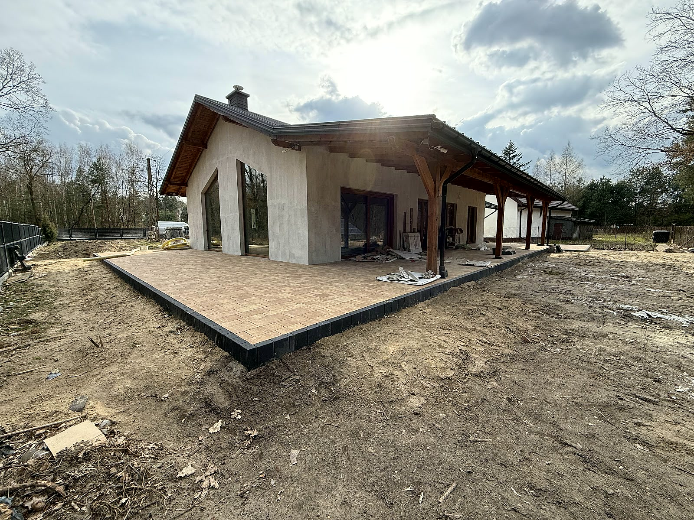
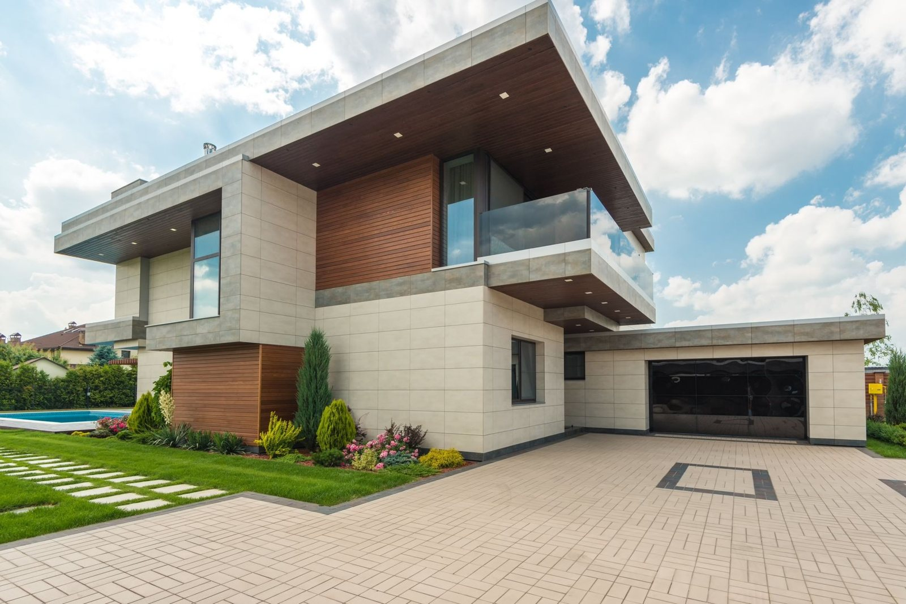
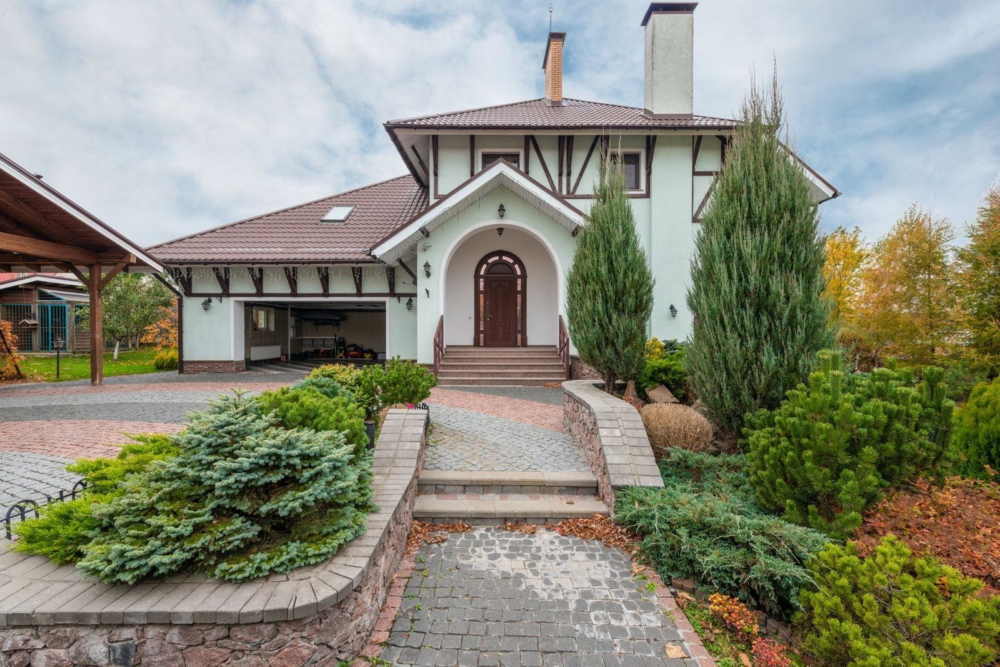
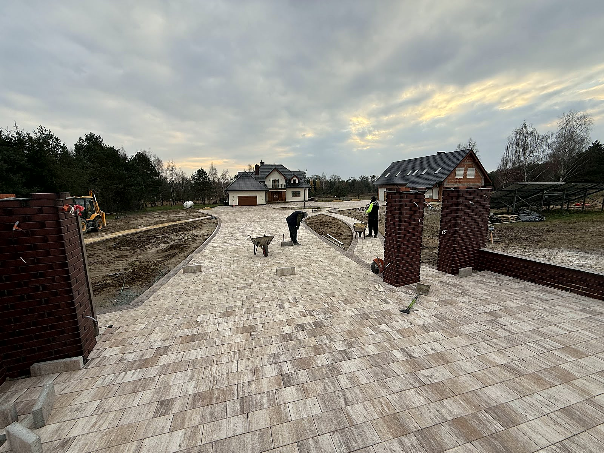

Strona głównaOferta
Podjazdy, tarasyi place z kostki.
Obrzeża, palisady, schody, odwodnienia i podbudowa. Łowicz i okolice. Każde zlecenie zaczynamy od pomiaru i sprawdzenia gruntu.

Podjazdyi dojazdy.
Stary podjazd siada, kostka klawiszuje, po deszczu stoi kałuża? Rozbieramy nawierzchnię, poprawiamy podbudowę i układamy kostkę od nowa, często z odzyskanego materiału, jeśli jest w dobrym stanie. Wychodzi taniej niż nowa kostka, a podjazd znowu stoi równo.
- Nowe podjazdy pod auta
- Przekładanie starej kostki
- Łuki i wyspy zieleni

Tarasyi ścieżki.
Kostka, płyty tarasowe czy granit: każdy materiał inaczej znosi słońce, mróz i mech. Zanim wybierzesz, pokażemy, jak dany materiał zachowuje się po kilku sezonach, a nie na zdjęciu z katalogu. Taras ma pasować do domu przez lata, nie przez pierwszy sezon.
- Kostka i płyty tarasowe
- Granit
- Ścieżki w ogrodzie

Placei parkingi.
Plac manewrowy czy parking to inna praca niż ścieżka. Auta dostawcze wymagają głębszego koryta i mocniejszego zagęszczenia. Robimy większe powierzchnie z wytyczonymi spadkami i odwodnieniem, żeby po ulewie dało się przejść suchą nogą, a nawierzchnia zniosła codzienny ruch.
- Place manewrowe
- Parkingi
- Spadki i odwodnienie

Palisady, obrzeżai schody.
Obrzeża i krawężniki to rama całej nawierzchni. Osadzamy je na betonie, bo bez tego kostka z czasem rozchodzi się na boki. Palisadą wyprowadzamy różnice terenu, a ze schodów z palisady i bloczków robimy zejścia, które nie ruszą się po zimie.
- Obrzeża na betonie
- Palisady przy skarpach
- Schody z bloczków

Odwodnienialiniowe.
Odwodnienie planujemy razem z nawierzchnią, nie po fakcie. Wtedy korytka siedzą równo z kostką i nie ma progów, o które zahacza koło. A jeśli podjazd już leży i łapie wodę, da się to poprawić: dokładamy odwodnienie, rozbierając tylko ten pas, który trzeba.
- Planowane razem z nawierzchnią
- Korytka bez progów
- Poprawki na gotowym podjeździe

Podbudowai korytowanie.
Grunt gruntowi nierówny. Piasek dobrze odprowadza wodę, glina trzyma ją pod nawierzchnią i zimą podnosi kostkę. Dlatego zanim podamy cenę, sprawdzamy, co siedzi pod wierzchnią warstwą, i pod to dobieramy głębokość koryta i grubość podbudowy.
- Sprawdzenie gruntu przed wyceną
- Koryto pod rodzaj ruchu
- Zagęszczanie warstwami
W cenie
Jedna cenaza całość.
Podajemy ją po pomiarze, a w trakcie prac już nie rośnie. Ziemię możemy też zostawić na miejscu, jeśli chcesz podnieść ogród.
Pomiar i grunt
Mierzymy teren i sprawdzamy, co siedzi pod spodem.
Materiał
Kostka od nas albo powierzona, po obejrzeniu.
Układanie
Od koryta i podbudowy po fugowanie kostki.
Wywóz
Ziemia z koryta i stara nawierzchnia znikają z placu.
Kontakt
Która usługaCię interesuje?
Powiedz, co chcesz zrobić. Umówimy pomiar i podamy cenę. Bez zobowiązań.